최민성, 박종락, 한원빈, 이창엽, 최승혁, 천휘
YSAL 2026-1 Semester 2nd Team Project(Basketball), 2026.
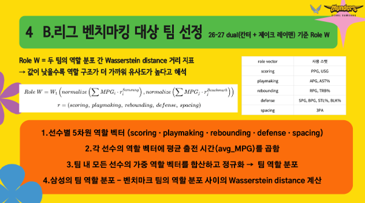
박서진, 남의서, 권수연, 엽미여, 이종서
YSAL 2026-1 Semester 1st & 2nd Team Project(Basketball), 2026.

박진우, 백준승, 유예진, 이건희, 이정현
YSAL 2026-1 Semester 2nd Team Project(E-Sports), 2026.

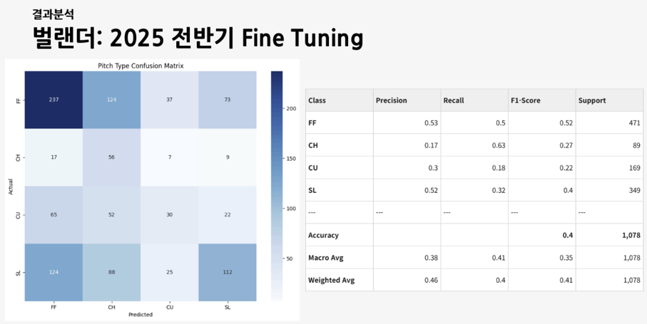

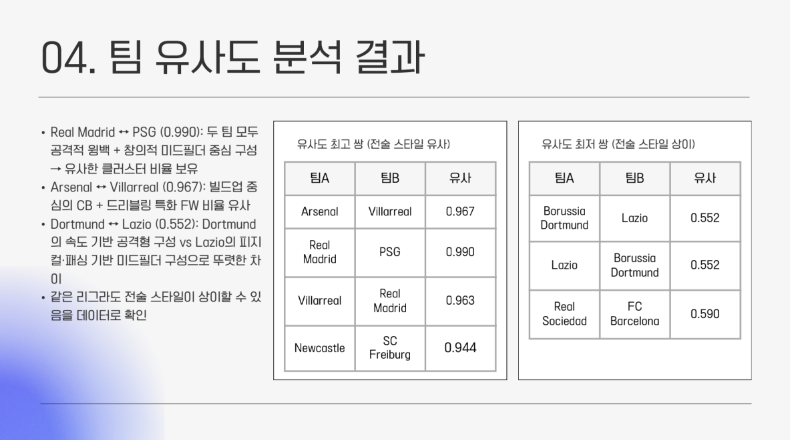
권남현, 김진하, 백예주, 이민재, 이한서
YSAL 2026-1 Semester 1st Team Project(Soccer), 2026.
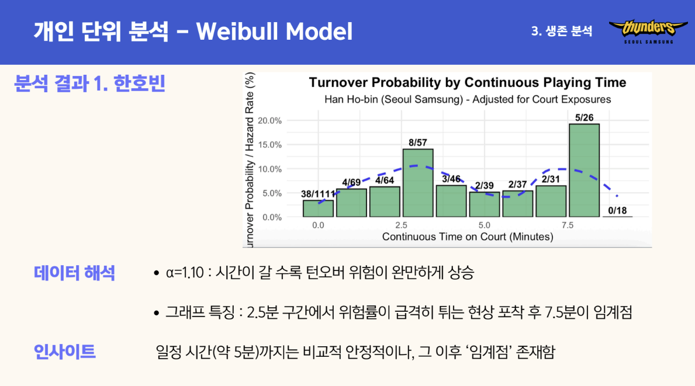
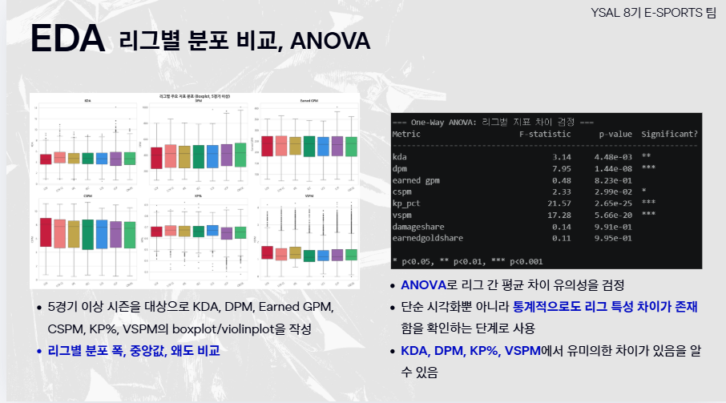
박진우, 백준승, 유예진, 이건희, 이정현
YSAL 2026-1 Semester 1st Team Project(E-Sports), 2026.
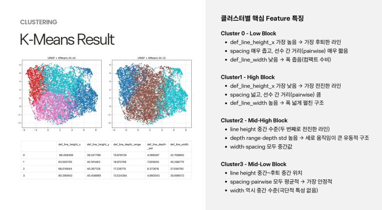
박성민, 백예주, 박종화, 이민재, 이승후, 전유진
YSAL 2025-2 Semester 2nd Team Project(Soccer), 2025.
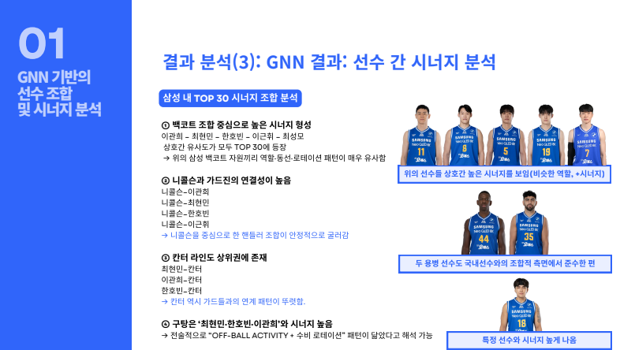
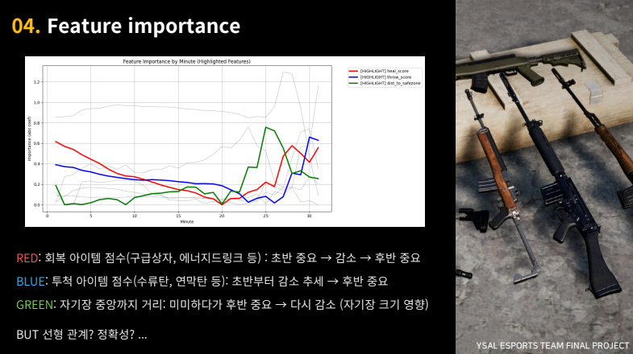
김정민, 손예인, 박진우, 유예진
YSAL 2025-2 Semester 2nd Team Project(E-Sports), 2025.
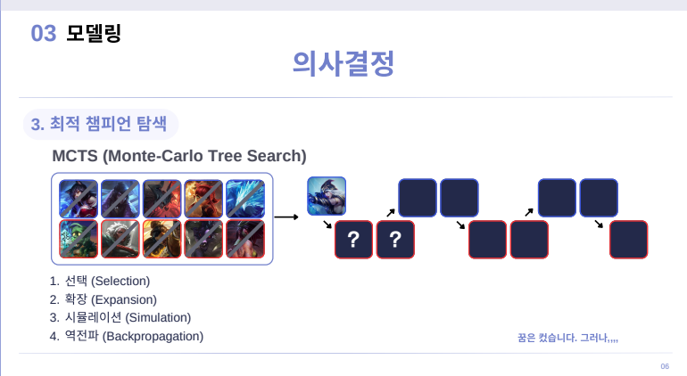
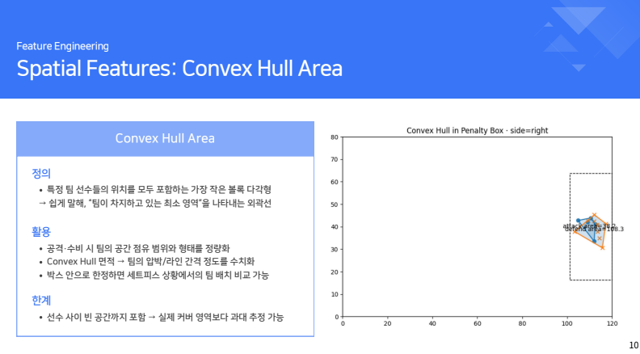
박성민, 백예주, 박종화, 이민재, 이승후, 전유진
YSAL 2025-2 Semester 1st Team Project(Soccer), 2025.
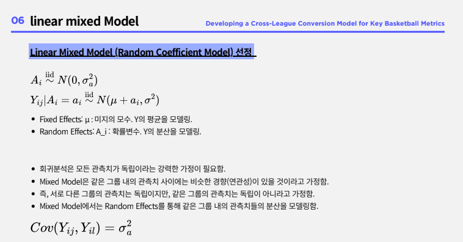
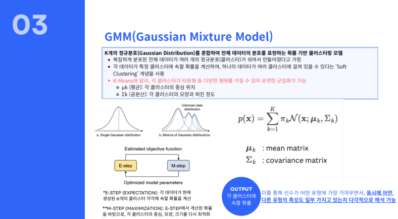
전희망, 송준영, 이종서, 이창엽
YSAL 2025-2 Semester 1st Team Project(Basketball), 2025.
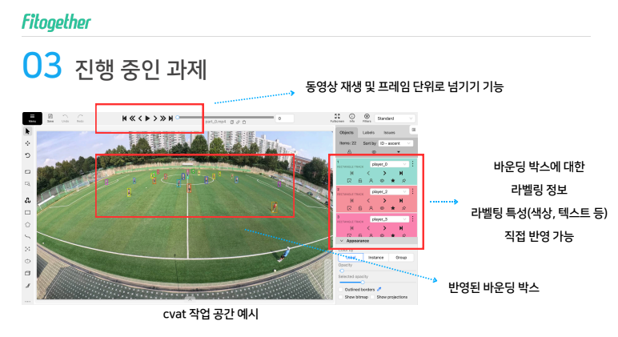
박성민, 이재현, 이준영, 진영웅, 장진호, 장찬주, 전유진
YSAL 2025-1 Semester 2nd Team Project(Soccer), 2025.
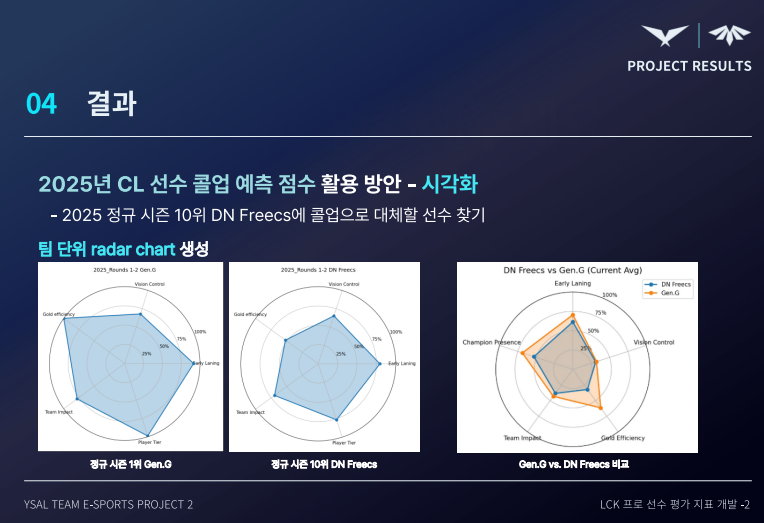
김정민, 손예인, 이성훈, 탁지호
YSAL 2025-1 Semester 2nd Team Project(E-Sports), 2025.
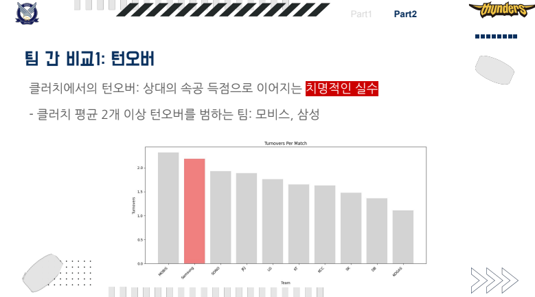
Team Basketball
YSAL 2025-1 Semester 2nd Team Project(Basketball), 2025.
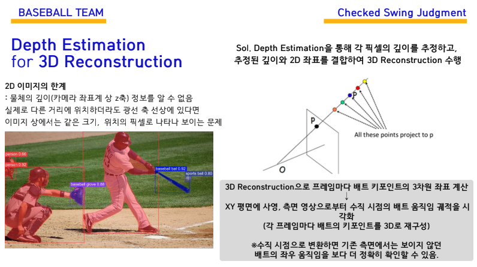
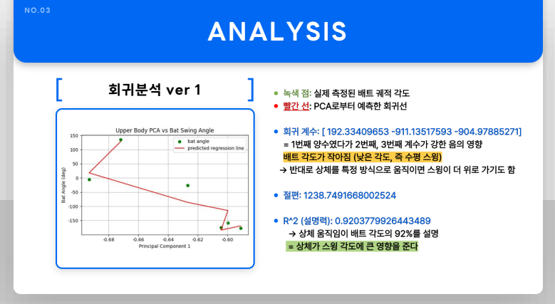
정희주, 이동현, 김유찬
YSAL 2025-1 Semester 2nd Team Project(Baseball), 2025.
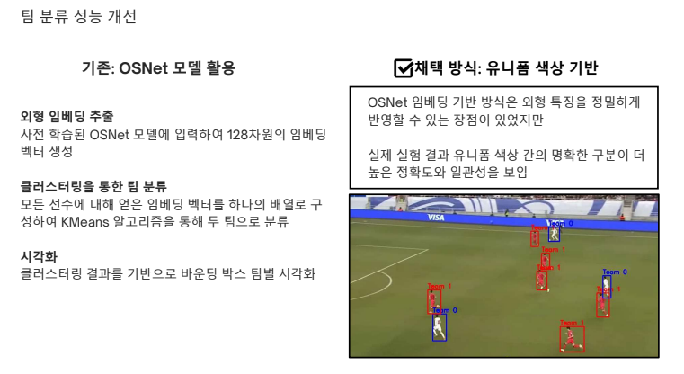
장진호, 이재현, 진영웅, 정찬주, 박성민, 전유진
YSAL 2025-1 Semester 1st Team Project(Soccer), 2025.
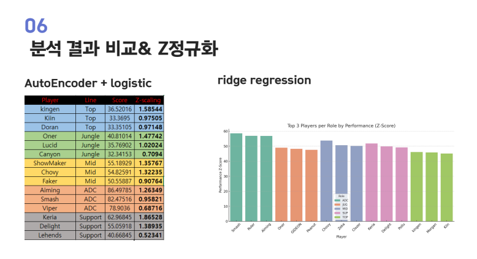
이성훈, 손예인, 탁지호, 김정민
YSAL 2025-1 Semester 1st Team Project(E-Sports), 2025.
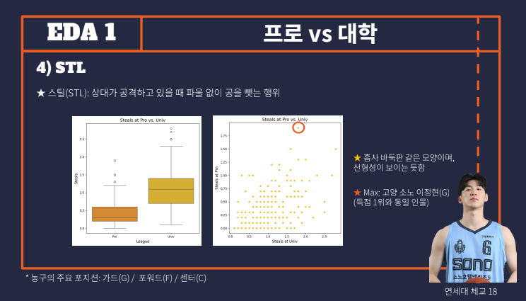
권수연, 전희망, 고석영, 김진하
YSAL 2025-1 Semester 1st Team Project(Basketball), 2025.
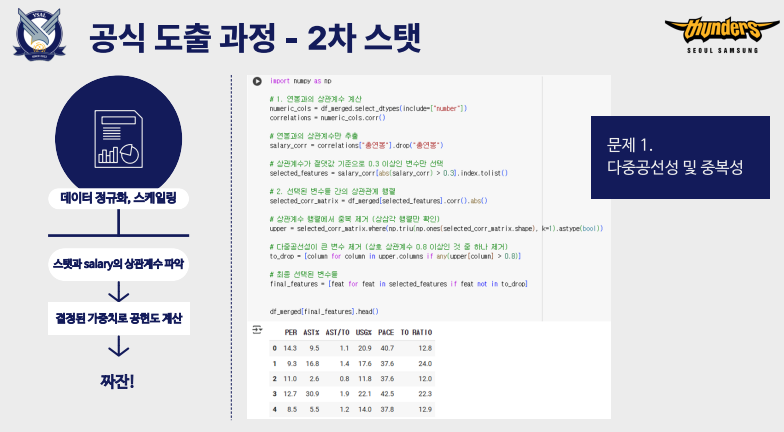
박진우, 이용호, 남의서, 이든
YSAL 2025-1 Semester 1st Team Project(Basketball), 2025.
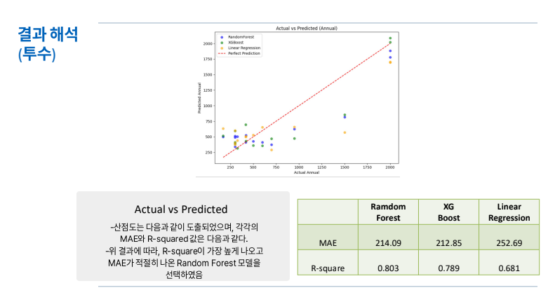
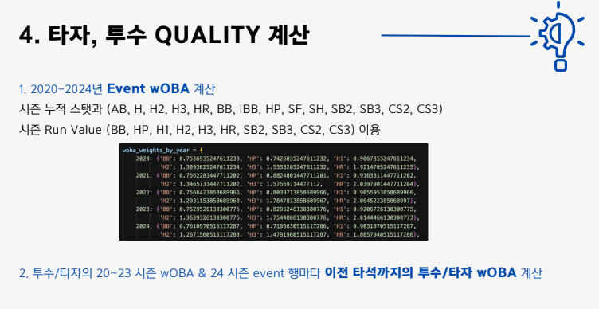